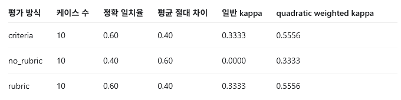

Evaluation Report
arXiv-tracker 요약 품질 평가: Human vs LLM-as-Judge
요약 (Summary)
본 프로젝트는 Claude Code로 개발한 arxiv-tracker의 한국어 논문 요약 결과를 대상으로, 사람 평가와 LLM-as-Judge 평가가 얼마나 일치하는지 분석하였다. arxiv-tracker는 arXiv API를 통해 LLM 관련 최신 논문을 수집하고, Gemini API를 이용해 abstract를 5개 섹션으로 요약하는 시스템이다. 본 실험에서는 실제 API 호출을 통해 확보한 논문 10편을 평가 대상으로 삼고, 동일한 요약 결과에 대해 사람 평가와 LLM 평가를 각각 수행하였다. 평가 방식은 기준 없는 평가, 기준 기반 평가, rubric 기반 평가의 세 가지로 구성했으며, 두 평가자의 일치도는 Cohen’s kappa와 quadratic weighted kappa로 측정하였다.
1. 서론 (Introduction)
최근 LLM은 논문 요약, 질의응답, 코드 생성, 에이전트 기반 작업 수행 등 다양한 개방형 생성 과제에 활용되고 있다. 그러나 이러한 시스템의 성능을 평가하는 일은 단순하지 않다. 전통적인 benchmark는 정답이 명확한 객관식, 수치형, 토큰 매칭 문제를 중심으로 설계되었기 때문에 accuracy나 exact match처럼 자동화된 지표를 적용하기 쉽다. 반면 논문 요약과 같은 open-ended generation task에서는 하나의 정답만 존재하지 않으며, 요약이 좋은지 판단하기 위해서는 정확성, 충실성, 유용성, 표현의 자연스러움, 형식 준수 여부 등을 함께 고려해야 한다.
평가는 추상적인 품질 개념을 구체적인 metric으로 operationalization하는 과정이다. 즉, “좋은 요약”이라는 모호한 개념을 어떤 기준으로 측정할 것인지 결정해야 한다. 하지만 단일 점수만으로 open-ended output을 평가하면 여러 문제가 발생한다. LLM-as-Judge는 빠르고 확장 가능한 평가를 제공하지만, 답변 길이, 문체, 유창성 등에 영향을 받을 수 있으며, 하나의 scalar score는 왜 특정 점수가 부여되었는지 설명하기 어렵다.
이러한 한계를 줄이기 위해 최근 평가 방법론은 단순 점수 평가에서 rubric 기반 평가로 확장되고 있다. Rubric은 평가 기준과 점수 anchor를 명시함으로써, 평가자가 무엇을 좋은 출력으로 볼 것인지 사전에 정의한다. 이는 모델 개발자와 사용자 사이의 “좋은 답변에 대한 계약”처럼 작동하며, 평가 결과를 더 해석 가능하게 만든다.
2. 평가 대상 및 연구 질문 (Evaluation Target and Research Questions)
2.1 평가 대상 (Evaluation Target)
평가 대상은 `target_project/arxiv-tracker`에 포함된 논문 요약 시스템이다. 시스템의 핵심 출력은 논문 title과 abstract를 입력으로 받아 생성하는 한국어 5섹션 요약이다.
요약 형식은 다음과 같다.
- 핵심 기여
- 방법론
- 결과
- 한계
- 키워드
평가 관점에서 중요한 점은 이 출력이 closed-form answer가 아니라는 것이다. 같은 abstract를 읽더라도 좋은 요약의 기준은 정확성, 완성도, 읽기 쉬움, 형식 준수, 한계 서술의 충실성 등 여러 속성으로 나뉜다. 따라서 단순 문자열 일치나 ROUGE만으로는 과제 목적에 맞는 평가가 어렵다고 판단했다.
2.2 연구 질문 (Research Questions)
본 프로젝트는 다음 질문에 답하도록 설계했다.
- 기준 없는 1~5점 평가에서는 사람과 LLM-as-Judge가 얼마나 일치하는가?
- 평가 기준을 제시하면 일치도가 높아지는가?
- 점수별 anchor가 있는 rubric을 사용하면 LLM-as-Judge의 판단이 사람 평가와 더 가까워지는가?
- 일반 Cohen's kappa와 quadratic weighted kappa는 어떤 차이를 보이는가?
- 불일치가 발생한 케이스는 어떤 품질 속성에서 차이가 났는가?
3. 평가 데이터 (Evaluation Dataset)
3.1 평가 케이스 (Evaluation Cases)
평가 케이스는 arxiv-tracker의 실제 사용 목적에 맞게 arXiv API 기반 논문 10개로 구성했다. 각 케이스는 P01부터 P10까지의 case_id를 가지며, data/papers_sample.csv에 arXiv ID, 제목, 매칭 키워드, abstract를 저장했다.
선정된 논문은 LLM transparency, MoE calibration, Bayesian in-context learning, on-device LLM serving, tool-calling agent, MLLM bias, SAR multimodal dataset, multilingual code benchmark, coding agent guidance, safety-aligned LLM 등 다양한 주제를 포함한다.
3.2 생성 출력 (Generated Outputs)
각 논문 abstract에 대해 arxiv-tracker의 요약 형식을 따라 한국어 요약을 생성했고, 결과를 data/generated_outputs.csv에 저장했다. 모든 출력은 동일한 5섹션 포맷을 따르도록 구성했다.
평가자는 abstract에 근거한 요약 품질만 판단하도록 했다. 즉, 논문 본문 전체를 읽어야만 알 수 있는 내용은 평가 기준에서 제외했고, abstract에서 확인 가능한 사실성, 누락, 과장 여부에 집중했다.
4. 평가 방식 (Evaluation Method)
4.1 사람 평가 (Human Evaluation)
사람 평가를 먼저 수행했다. 이는 LLM-as-Judge 결과를 본 뒤 사람 점수가 영향을 받는 것을 방지하기 위함이다. 사람 점수와 간단한 판단 근거는 `data/human_ratings.csv`에 기록했다.
4.2 LLM-as-Judge 평가 (LLM-as-Judge Evaluation)
LLM-as-Judge 평가는 ChatGPT 기반의 GPT-5 계열 모델을 사용해 수행하였다. 모든 평가 케이스에는 동일한 별도 평가 프롬프트를 적용했으며, 프롬프트는 prompts/ 폴더에 저장했다. 평가 입력은 논문 제목, abstract, 생성된 한국어 요약으로 구성했고, 출력은 1~5점 정수 점수와 짧은 rationale로 제한했다. 각 케이스는 1회씩 평가했으며, 사람 평가 결과가 LLM 판단에 영향을 주지 않도록 사람 평가 점수는 입력에 포함하지 않았다. 최종 LLM 평가 결과는 data/llm_judge_ratings.csv에 기록했다.
4.3 평가 조건 (Evaluation Conditions)
첫째, 기준 없는 평가(no_rubric)는 "전반적으로 얼마나 좋은가"만 보고 1~5점을 부여했다. 이 방식은 실제 사용자의 직관적 평가에 가깝지만, 점수 의미가 평가자마다 흔들릴 수 있다.
둘째, 기준 기반 평가(criteria)는 정확성, 완성도, 유용성, 한국어 자연스러움, 형식 준수를 함께 고려해 하나의 최종 점수를 부여했다. 이는 rubric보다 단순하지만, 평가자가 무엇을 봐야 하는지 명확히 한다.
셋째, rubric 기반 평가(rubric)는 점수별 anchor를 명시했다.
- The summary is mostly wrong, unrelated, or misses almost all important content.
- The summary is partly related but omits important points or contains notable misunderstanding.
- The summary is mostly correct but vague, incomplete, or weakly structured.
- The summary is accurate and useful, with only minor omissions or lack of detail.
- The summary is accurate, complete, concise, naturally written in Korean, and clearly organized into the required five sections.

5. 일치도 계산 (Agreement Measurement)
사람 점수와 LLM 점수를 `data/final_evaluation_dataset.csv`로 결합한 뒤, `scripts/calculate_kappa.py`에서 sklearn.metrics.cohen_kappa_score를 사용해 Cohen's kappa를 계산했다. sklearn이 없는 환경에서도 결과를 재현할 수 있도록 수동 계산 fallback도 포함했다.
1~5점 점수는 순서형 척도이므로 일반 kappa와 weights="quadratic"을 적용한 weighted kappa를 모두 계산했다. 일반 kappa는 4점과 5점의 차이도 완전한 불일치로 본다. 반면 quadratic weighted kappa는 인접한 점수 차이는 작게 반영하고, 1점과 5점처럼 멀리 떨어진 점수 차이는 크게 반영한다.
6. 평가 결과 (Evaluation Results)
기준 없는 평가는 정확 일치율 0.40, 일반 kappa 0.0000으로 가장 낮았다. 사람 평가자는 읽기 쉽고 핵심이 잡히면 5점을 주는 경향이 있었지만, LLM-as-Judge는 한계 섹션의 부실함이나 기술적 구체성 부족을 더 적극적으로 감점했다.
기준 기반 평가와 rubric 기반 평가는 정확 일치율 0.60, 일반 kappa 0.3333으로 상승했다. 평가 기준을 명시하자 두 평가자가 같은 항목을 보게 되었고, 특히 형식 준수와 정확성에 대한 판단은 안정적으로 맞았다. 다만 4점과 5점의 경계, 또는 3점과 4점의 경계에서는 여전히 차이가 남았다.
7. 결과 분석 (Result Analysis)
7.1 Weighted Kappa 해석 (Weighted Kappa Interpretation)
모든 불일치는 1점 차이에 머물렀다. 따라서 일반 kappa보다 quadratic weighted kappa가 높게 나타났다. criteria와 rubric의 weighted kappa는 0.5556으로, unweighted kappa 0.3333보다 높다. no_rubric도 unweighted kappa는 0.0000이지만 weighted kappa는 0.3333이다. 이는 사람과 LLM이 완전히 다른 판단을 한 것이 아니라, 대체로 같은 방향으로 보되 LLM이 한 단계 더 보수적으로 점수를 준 경우가 많다는 뜻이다.
이 결과는 1~5점 평가에서 weights="quadratic"을 함께 보고하는 것이 중요함을 보여준다. 일반 kappa만 보면 기준 없는 평가가 거의 무의미하게 보이지만, weighted kappa를 함께 보면 평가자들이 완전히 반대 방향으로 판단한 것은 아니라는 점이 드러난다.
7.2 불일치 사례 분석 (Disagreement Case Analysis)
P03 Multi-Task Bayesian In-Context Learning 요약은 사람이 4점, LLM이 3점을 주었다. 사람은 논문의 핵심 아이디어와 결과가 어느 정도 잘 전달된다고 보았다. 하지만 LLM은 새로운 prior에 적응하는 방식이나 어려운 평가 조건에 대한 설명이 부족하다고 판단했다.
P06 StylisticBias 요약은 사람이 5점, LLM이 4점을 주었다. 사람은 데이터 규모, 평가한 모델 수, 주요 결과가 잘 정리되어 있다고 보았다. 반면 LLM은 한계 부분이 너무 짧고 구체적이지 않다는 점을 감점했다.
P07 SARLO-80 요약은 사람이 4점, LLM이 3점을 주었다. 사람은 데이터셋의 규모와 구성이 잘 설명되었다고 보았다. 하지만 LLM은 SAR 데이터의 특징이나 이 데이터셋이 어떤 평가에 쓰일 수 있는지에 대한 설명이 더 필요하다고 판단했다.
P10 What Do Safety-Aligned LLMs Learn From Mixed Compliance Demonstrations? 요약은 사람이 5점, LLM이 4점을 주었다. 사람은 실험 구성과 핵심 결론이 충분히 잘 전달된다고 보았다. 반면 LLM은 모델이 유해하거나 무해한 예시를 어떻게 받아들이는지, 그리고 거절 응답을 할 때 문맥 정보를 어떻게 처리하는지에 대한 설명이 조금 더 필요하다고 평가했다.
전체적으로 보면, 사람과 LLM의 점수 차이는 요약이 틀렸기 때문에 생긴 것은 아니었다. 사람은 “핵심을 이해하기에 충분한가”를 더 중요하게 보았고, LLM은 “세부 내용까지 충분히 설명했는가”를 더 엄격하게 보았다. 따라서 본 시스템의 약점은 완전히 잘못된 요약을 만드는 것보다는, 복잡한 abstract를 짧게 요약하는 과정에서 일부 세부 설명이 줄어드는 데 있었다.
8. 한계 및 향후 과제 (Limitations and Future Work)
첫째, 평가 케이스가 10개로 제한되어 있다. 과제 권장 조건은 만족하지만, 더 안정적인 kappa를 얻으려면 논문 주제별로 더 많은 케이스를 수집해야 한다.
둘째, LLM-as-Judge도 편향을 가진다. 강의 자료에서 다룬 것처럼 LLM judge는 길이, 문체, 구체성에 영향을 받을 수 있다. 본 프로젝트에서도 LLM은 사람이 충분히 유용하다고 본 요약을 기술적 세부 설명 부족으로 낮게 평가하는 경향을 보였다.
셋째, 현재 평가는 단일 LLM judge 기준이다. 향후에는 여러 judge 모델을 사용하거나, pairwise preference 평가를 추가해 절대 점수의 anchor drift를 줄일 수 있다.
넷째, 모든 평가가 abstract 기반이다. 실제 논문 본문까지 요약하는 시스템으로 확장하면, citation faithfulness, section coverage, hallucination rate 같은 추가 기준이 필요하다.
9. 결론 (Conclusion)
본 프로젝트는 Claude Code로 만든 arxiv-tracker의 요약 출력 품질을 사람 평가와 LLM-as-Judge 평가로 비교하고, Cohen's kappa를 통해 두 평가자의 일치도를 정량화했다. 기준 없는 평가는 평가자 간 기준 차이로 인해 kappa가 낮았지만, criteria와 rubric을 도입하자 일치도가 상승했다.
가장 중요한 관찰은 LLM-as-Judge가 사람보다 기술적 완성도와 한계 서술을 더 엄격하게 본다는 점이다. 사람은 실사용 관점에서 요약이 읽기 쉽고 핵심을 전달하면 높은 점수를 주었지만, LLM은 abstract의 세부 조건과 limitation이 충분히 반영되지 않으면 감점했다.
따라서 open-ended 생성 시스템을 평가할 때는 단순 평균 점수보다 평가 기준, rubric, 불일치 사례, weighted kappa를 함께 제시하는 것이 더 설득력 있다. 특히 1~5점 순서형 척도에서는 일반 Cohen's kappa와 quadratic weighted kappa를 함께 보고해야 평가자 간 차이의 실제 크기를 더 정확히 해석할 수 있다.
References
- [1] Zheng et al. (2023), “Judging LLM-as-a-Judge with MT-Bench and Chatbot Arena”
- [2] Cohen (1960), “A Coefficient of Agreement for Nominal Scales”
- [3] Cohen (1968), “Weighted Kappa: Nominal Scale Agreement with Provision for Scaled Disagreement or Partial Credit”